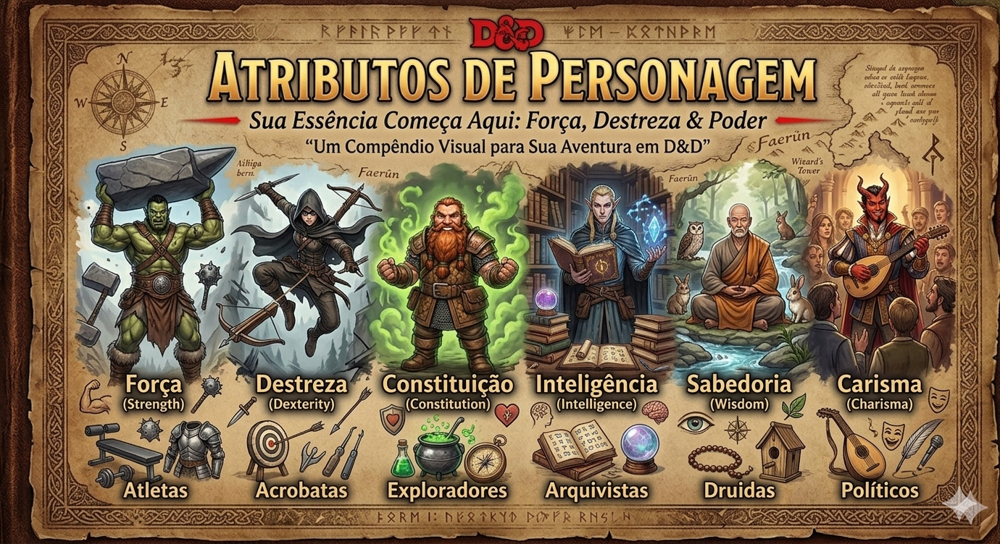

ATRIBUTOS

🧠 O que são Atributos?
- São as características principais do personagem
- Definem o que ele faz bem ou mal
- Afetam praticamente todas as rolagens do jogo
📊 Lista de Atributos
💪 Força (STR)
- Ataques corpo a corpo (armas pesadas)
- Empurrar, puxar, levantar peso
- Atletismo
🏃 Destreza (DEX)
- Classe de Armadura (CA)
- Ataques à distância
- Furtividade e reflexos
❤️ Constituição (CON)
- Pontos de vida
- Resistência física
- Manter concentração em magias
📚 Inteligência (INT)
- Conhecimento e lógica
- Magias de mago
- Investigação
👁️ Sabedoria (WIS)
- Percepção e intuição
- Magias divinas (clérigo, druida)
- Consciência do ambiente
🗣️ Carisma (CHA)
- Influência social
- Magias de bardo, feiticeiro e bruxo
- Enganação, persuasão
🧮 Modificador de Atributo
- O valor do atributo gera um modificador
- Esse modificador é o que você usa nas rolagens
📌 Exemplos:
- 10 = +0
- 12 = +1
- 14 = +2
- 16 = +3
- 18 = +4
🎲 Como usar no jogo
- Rolar d20 + modificador do atributo
- Somar bônus de proficiência (se tiver)
- Comparar com dificuldade (CD) ou defesa do inimigo
⚠️ Dicas Importantes
- Nem todo teste usa o mesmo atributo
- Escolha atributos de acordo com sua classe
- Constituição é importante para TODOS os personagens
- Destreza influencia diretamente sua defesa (CA)
📌 Resumo Rápido
- Atributos definem o personagem
- O modificador é o valor usado no jogo
- Afetam ataques, testes e resistência
- São a base de todas as mecânicas